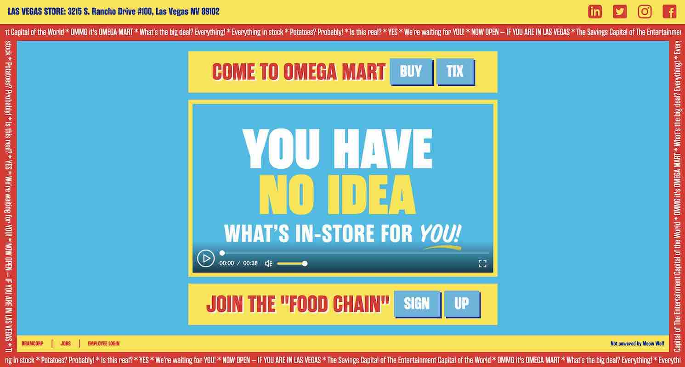

Breath Wreaths, Bryce Wilner
Breath Wreaths, Bryce Wilner
 17776 (What Football Will Look Like in the Future), Jon Bois, Tyson Whiting
17776 (What Football Will Look Like in the Future), Jon Bois, Tyson Whiting

Omega Mart, Meow Wolf
ISBN 9781616135553 / Clarence Birdseye: frozen food innovator. Joanne Mattern. Abdo Pub. Co., 2011
Woloson, Wendy. "Frozen Entrées." In St. James Encyclopedia of Popular Culture, 2nd ed., edited by Thomas Riggs, 400-402. Vol. 2. Detroit, MI: St. James Press, 2013. Gale eBooks (accessed January 6, 2022). https://link.gale.com/apps/doc/CX2735801029/GVRL?u=sain79627&sid=bookmark-GVRL&xid=71ec3948.
Breath Wreaths, Bryce Wilner
17776 (What Football Will Look Like in the Future), Jon Bois, Tyson Whiting